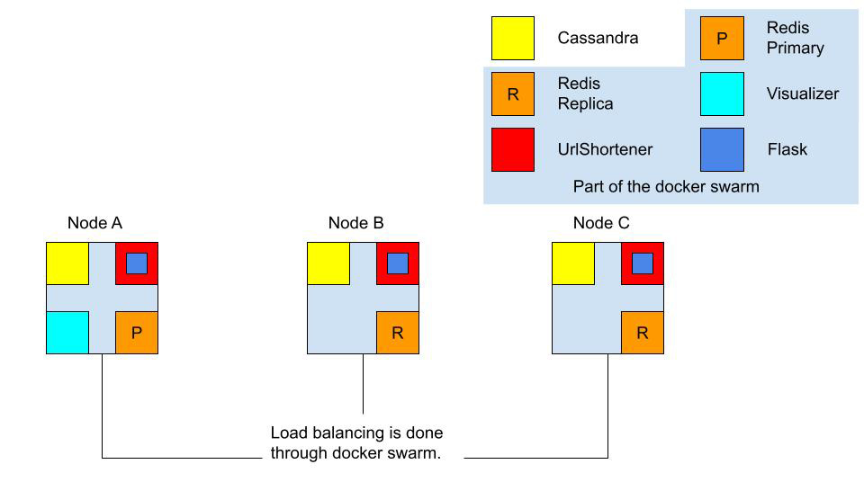

A simple URL shortner made for CSC409 using Python, Docker, Redis, and Cassandra. The functionality is similar to other URL shortners such as TinyURL and Bitly, where users can enter a long URL and a short URL, and the short URL will be redirected to the long URL. The program was written in Python and we used Docker swarm to take advantage of the multiple hosts we were provided with. Redis acts as a cache for the system while Cassandra is the main database.
Diagram of the architecture:
